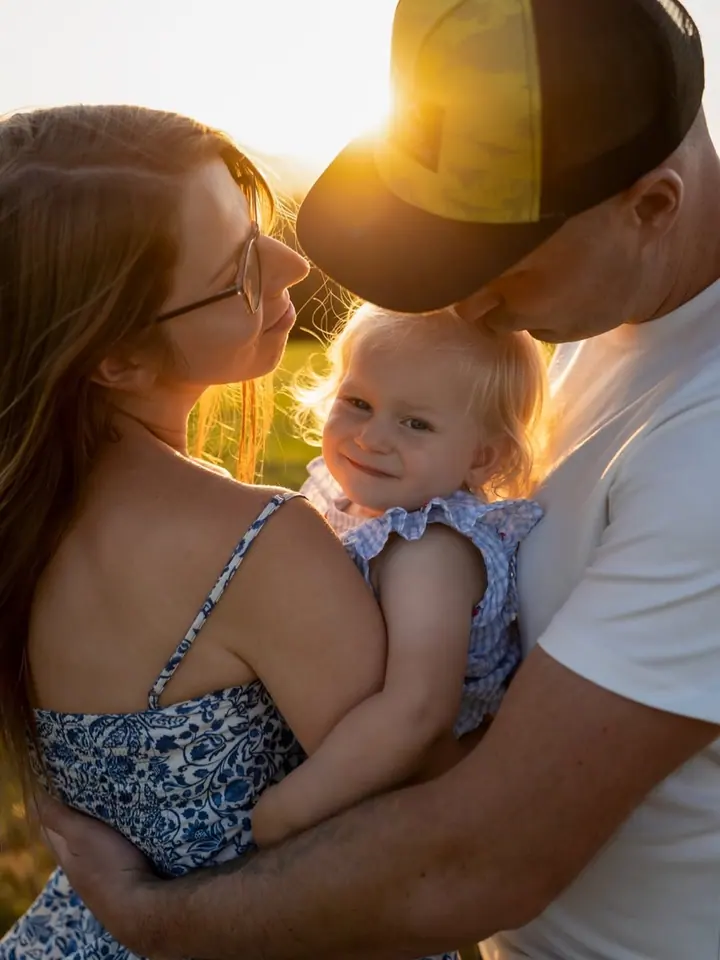
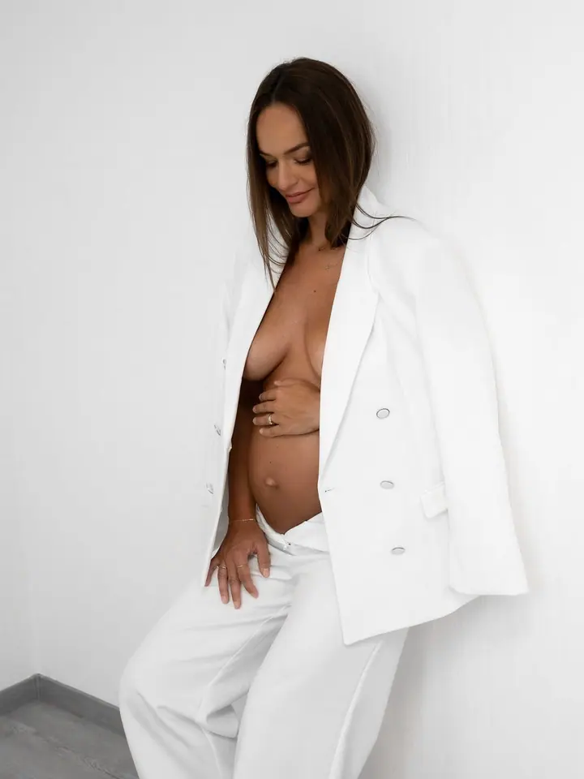
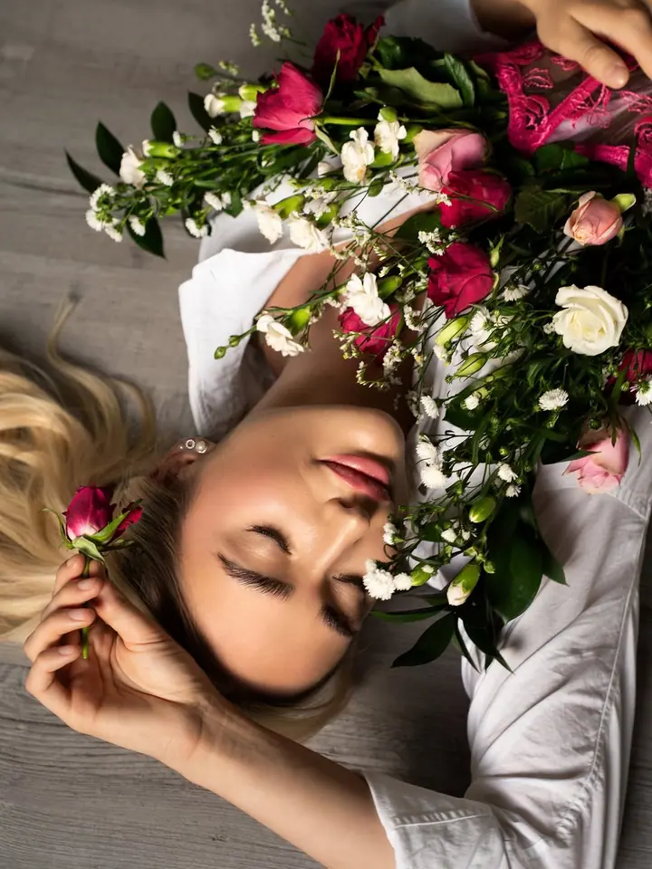
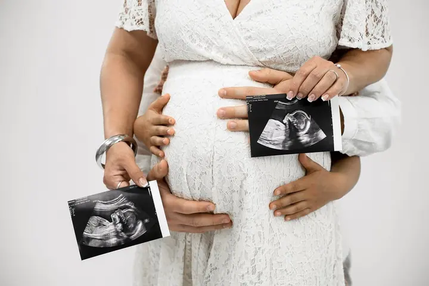
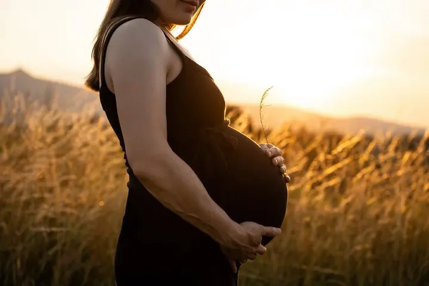
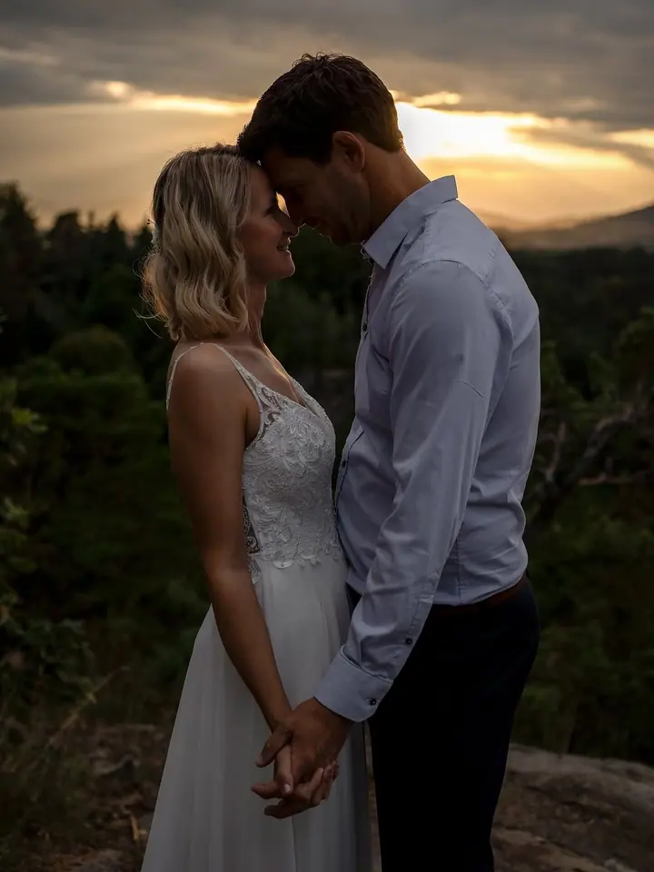

Rodinné a párové focení
Přirozené rodinné momentky a párové fotky v klidu ateliéru nebo venku v přirozeném světle. Domácí mazlíčci jsou u focení vítáni.





Jmenuji se Klára Josieková a v Liberci mám vlastní fotoateliér. Fotím rodiny, páry, těhotenství, miminka i svatby, v ateliéru i venku v přirozeném světle. Záleží mi na estetice a emocích, a protože je mou vášní i líčení, můžu vás před focením nalíčit.
Více o mně
„Při focení je mým cílem, aby každý klient odcházel spokojený a s radostí z výsledných fotek.“
— Klára Josieková
Přirozené rodinné momentky a párové fotky v klidu ateliéru nebo venku v přirozeném světle. Domácí mazlíčci jsou u focení vítáni.
Fotím váš den tak, jak ho opravdu prožíváte: obřad, portréty, reportážní momenty i drobné detaily. Začínáme předsvatební konzultací a podle vašich přání vybereme celodenní dokumentaci nebo zkrácenou verzi.
Fotím těhotenství v ateliéru i v přírodě a potom i miminko do 14 dnů věku, doma nebo v ateliéru. Bez spěchu a v přirozeném, jemném stylu bez přehnaného aranžování.
Dámské, osobní i business portréty a stylizované fotky pro web nebo sítě. Když chcete, doplním focení o photo make-up, který k celé náladě sedí.
K fotografování jsem měla vždycky blízko. Vystudovala jsem obor propagační grafika a design na Střední umělecké škole v Liberci a fotky si nejdřív vyzkoušela z druhé strany, jako modelka. Postupně mě to táhlo za objektiv, a tak jsem se začala focení věnovat naplno.
Fotím od novorozenců přes dámské a párové portréty až po rodinné focení a svatby, v interiéru i v exteriéru. Občas se pustím i do business focení, třeba firemních portrétů. V mém ateliéru v Husově ulici je ticho a klid, nikdo vás tam nebude rušit a připravená je i šatna.
Mimo fotografování je mou velkou vášní make-up, proto jsem vystudovala Make-up Institut Prague. Líčení a fotografie jdou podle mě ruku v ruce, a tak nabízím i profesionální photo make-up, který ladí s konceptem a náladou focení.
Napíšete nebo zavoláte a probereme, co si představujete. Cenu domluvíme vždy předem a teprve potom vybereme termín.
Poradím vám s oblečením, nejlépe jednobarevným a bez nápisů. Pokud chcete, připravím vám i photo make-up přímo k focení.
Fotíme v klidu v mém ateliéru v Liberci, venku v přirozeném světle, nebo u miminek klidně u vás doma. Tempo přizpůsobím vám i dětem.
Z náhledů si vyberete své fotky a já je pečlivě zretušuji. Dostanete je v elektronické podobě v barevné i černobílé variantě.
Cena se liší podle délky focení, náročnosti a podle toho, jestli chcete i vizážistické služby. Vždy ji domluvíme předem. Platí se v hotovosti v den focení a další fotky nad rámec balíčku můžete doplatit na účet.
Newborn fotky dělám u miminek do 14 dnů věku. Můžeme fotit u vás doma nebo v ateliéru, v klidu a bez spěchu.
Ano. Vystudovala jsem Make-up Institut Prague a nabízím profesionální photo make-up, který sladím s náladou celého focení.
Ano, na míru vám připravím dárkový voucher. Vyzvednete si ho osobně v tištěné podobě, nebo vám ho pošlu e-mailem.
info@kjphoto.cz
Liberec